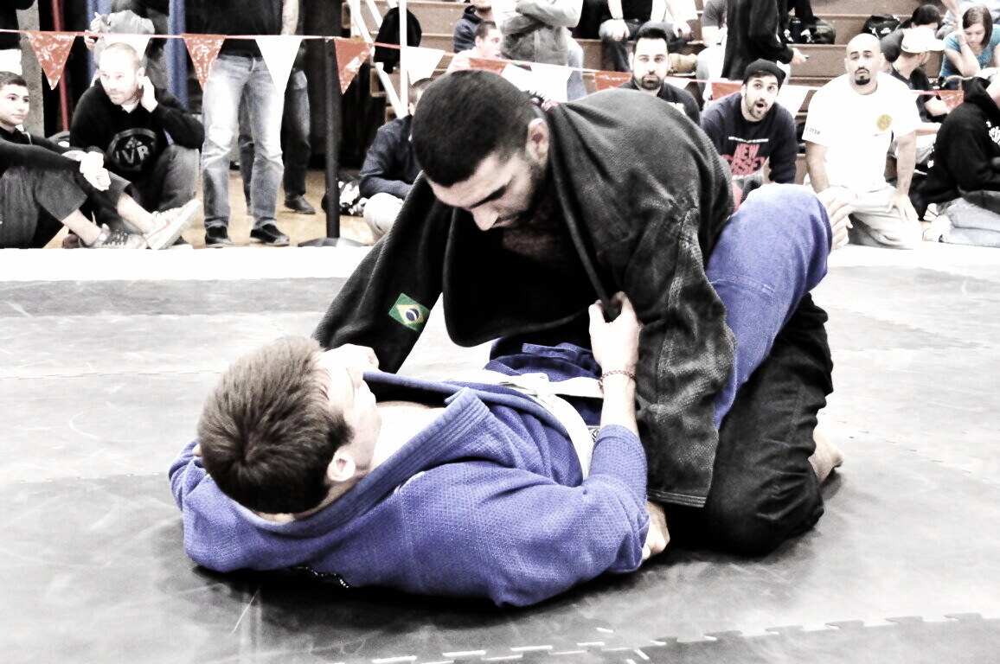

BJJ · Guard
High Guard
High guard is a Brazilian jiu-jitsu closed-guard (or open-adjacent) configuration where your legs climb high on the opponent's back/shoulder line—isolating an arm for armbars, triangles, and omoplata-family attacks.
What Is High Guard?
High guard is the climbed closed-guard shape: instead of locking at the waist, your thighs and feet ride up toward their armpits and shoulders, pinning an arm and creating finishing angles for the classic armbar. It is closed-guard offense at altitude. It is a key branch of closed guard.
How High Guard Works
Climb, control the near arm/head, pinch your knees, and pivot to the armbar—or divert to triangle/omoplata if they posture. Angle and hip mobility beat raw flexibility. If you climb without isolating an arm, they simply posture out.

Gi vs No-Gi
Gi. Sleeve and collar help the climb and freeze posture.
No-gi. Overhooks, wrist control, and tighter knee pinches replace cloth.
What Does High Guard Look Like in Practice?
Alex breaks Jordan's posture in closed guard, climbs legs high onto Jordan's back, isolates the arm, and finishes the armbar when Jordan tries to stack.
Types / Variations
Basic high-guard climb
Waist lock → climb → pin arm/shoulder line.
Armbar path
Pivot and extend for the juji-gatame finish.
Triangle / omoplata branches
When the armbar is stuffed, switch to triangle or omoplata without dropping fully out.
Escaping high guard (top)
Posture, stack carefully, extract the threatened arm, and pass or reset.
Entries, Counters, and Escapes
Entries. From closed guard after posture break; from Williams/shoulder-pin structures; from rubber-guard related climbs.
Bottom threats. Armbar, triangle, omoplata.
Top counters. Don't let the climb start; posture and peel; avoid diving the free arm in.
High Guard vs Closed Guard
| Factor | High Guard | Closed Guard |
|---|---|---|
| Leg height | High on back/shoulders | Locked at waist |
| Primary goal | Arm isolation / finishes | Control + setup hub |
| Mobility | Committed attack shape | Higher retention flexibility |
Special Considerations
IBJJF, ADCC, and sport context
Legal. Armbars and triangles finish matches under all major rules.
Safety
Control stacks—don't crank necks. Tap early to armbars; elbows go fast from high guard.
Common mistakes
- Climbing without isolating an arm.
- Loose knees— they extract easily.
- Abandoning triangle/omoplata when the armbar is blocked.
FAQ
Questions we hear on the mats, in forums, and under instructional videos—answered in Martial Index voice.
Is high guard the same as rubber guard?
No. Rubber guard is a 10th Planet overhook/shin system; high guard is the climb for classic arm attacks.
Do I need to be flexible for high guard?
Hip mobility helps, but angle and timing matter more than extreme flexibility.
Best submission from high guard?
Armbar is the namesake finish; triangles and omoplatas are the standard backups.
How do I escape high guard on top?
Posture before they climb; if climbed, stack carefully, free the arm, and pass—don't panic-post into triangles.
High guard in no-gi?
Yes—use overhooks and wrist control instead of sleeves.
High guard vs Williams guard?
Williams emphasizes a shoulder pin/trapping system that often feeds high-guard style attacks. See Williams.
The Bottom Line
High guard climbs the legs to isolate an arm for armbars (and triangle/omoplata backups). Closed-guard offense at altitude. See closed guard and armbar.